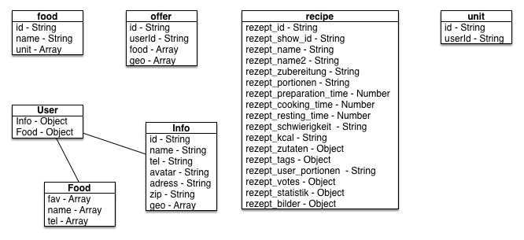
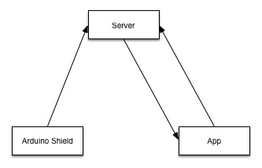

Frameworks
Bei der Auswahl der Frameworks entschieden wir uns für das Ionic-Framework (http://ionicframework.com) um die App umzusetzen. Dieses Framework ermöglicht es uns in bekannter Umgebung, d.h. normaler Website-Struktur, zu entwickeln. Ionic bietet uns die Möglichkeit Cross-Platform-Apps kompilieren zu lassen und mit einer Menge vorgegeben Komponenten und Funktionen zu arbeiten. Diese beinhalten z.B. Grid-Views, Buttons, Tab-Bars, List-Views und vieles mehr.
Durch den Einsatz von AngularJS (https://angularjs.org) im Frontend war es uns möglich sehr performanten Code zu schreiben und die Vorteile von MVC zu nutzen.

Als Server-Sprache haben wir uns für nodeJS (https://nodejs.org) entschieden, da wir hier den Vorteil haben, einen konsistenten Syntax sowohl im Frontend als auch im Backend verwenden zu können. Darüber hinaus ist es zur Zeit einer der zukunftsweisendsten Programmiersprachen im Kontext der Webentwicklung und findet zudem immer mehr Anklang über die Grenzen der Webentwicklung hinaus.

Sie etabliert sich fortwährend in mehr und mehr Bereichen wie zum Beispiel Implementierungsmöglichkeiten im IoT Umfeld auf Hardwarekomponenten. Durch das Express-Plugin (http://expressjs.com) haben wir die perfekte Umgebung geschaffen um http-Requests zu empfangen, zu verarbeiten und wieder an den Client zurückzuschicken. Durch die nodeJS-Erweiterung mongoose (http://mongoosejs.com) und den Einsatz von MongoDB als Datenbank war es uns möglich simple Datenbank-Schemen aufzubauen und mit diesen zu interagieren.
Datenbankstruktur

Authentifizierungsmechanismus
Das Arduino-NFC/RFID-Shield ist für die Erkennung des Nutzers zuständig. Dieses wird an der Kasse angebracht. Die Interaktion erfolgt denkbar einfach über das Handy. Der Nutzer hält das Handy an die Vorrichtung und übermittelt seine eindeutige ID an das Arduino. Das Arduino schickt die ID samt Kassenzettel an den Server. Dort wird er Verarbeitet und dem Nutzer zugeordnet. Somit haben wir Kinderleicht unser Inventar aktualisiert.
Der Prozess wird im unten stehenden Bild vereinfacht dargestellt:
